This project introduces the basic ideas behind diffusion models and demonstrates how they can be used for image generation and editing. It is shown how images can be gradually noised and then restored using a pre-trained diffusion model. Part A of the project includes generating images from text prompts, denoising noisy inputs, and progressively improving image quality through iterative sampling. It also covers more creative applications such as transforming existing images, projecting hand-drawn sketches onto the natural image manifold, inpainting, and creating visual illusions and hybrid images.
Below are shown 3 prompts for 5 inference steps in the upper row and 50 steps in the lower row. While the images for 5 steps are still noisy, the amount of detail and realism improves with a higher number of steps and the image becomes less noisy.
The seed was set to 180.
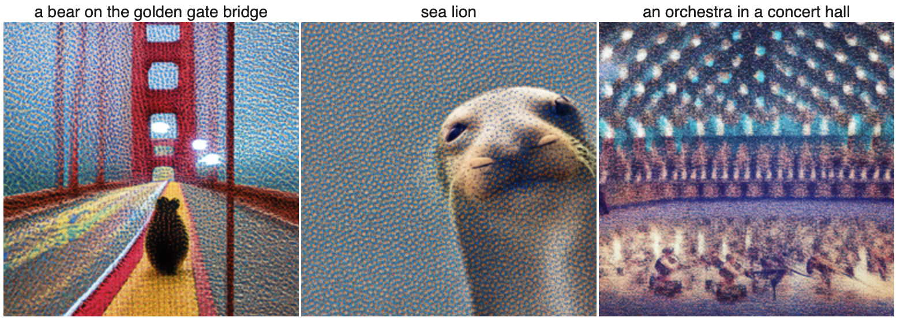
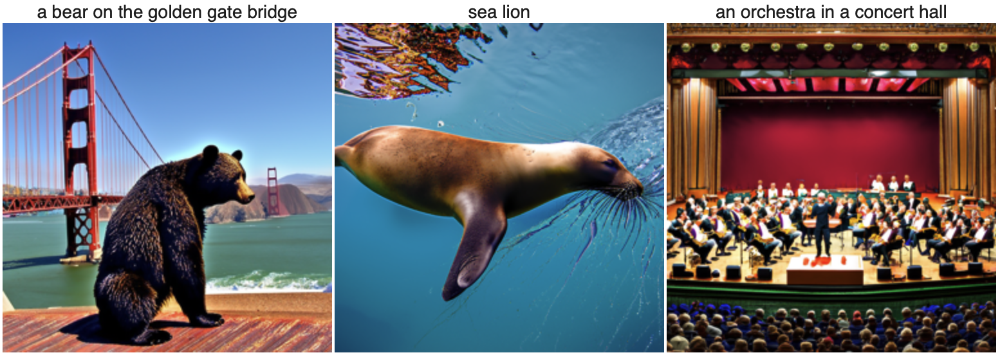
A forward diffusion pass is needed because diffusion models learn by first destroying an image in a controlled way and then reversing that destruction. To understand and later use the reverse process, it’s important to define how the image is noised. The idea is to start with a clean picture and gradually blend it with random noise so it becomes less and less recognizable over time. Early steps keep much of the original structure, while later steps push the image toward pure static. Implementing this controlled noising process makes it possible to visualize how the model’s “starting point” is created. The images shown below display this progression for the Campanile photo at increasing noise levels from left to right t = 250, 500, 750.
Before trying to denoise images with a diffusion model, it’s helpful to see how a basic classical method performs. Gaussian blur is a simple way to smooth out noise by softening the image, and it gives us a baseline to compare against. It cannot fully fix heavily noised images, but it shows classical methods work for moderately noised images. The blurred versions of the noisy Campanile images are shown below.
The next step is to try denoising with a learned diffusion model. Therefore, a pretrained UNet is used that has seen a huge number of noisy–clean image pairs and has learned how typical natural images should look. Given a noisy input and the noise level (timestep), the model estimates which parts of the image are just noise and which parts are actual content. By subtracting the predicted noise, it produces a cleaner version that is much closer to the original scene. A simple text condition like “a high quality photo” helps guide the model toward realistic results. Below, the original Campanile image, its noisy versions, and the one-step denoised outputs are shown side by side for different noise levels.
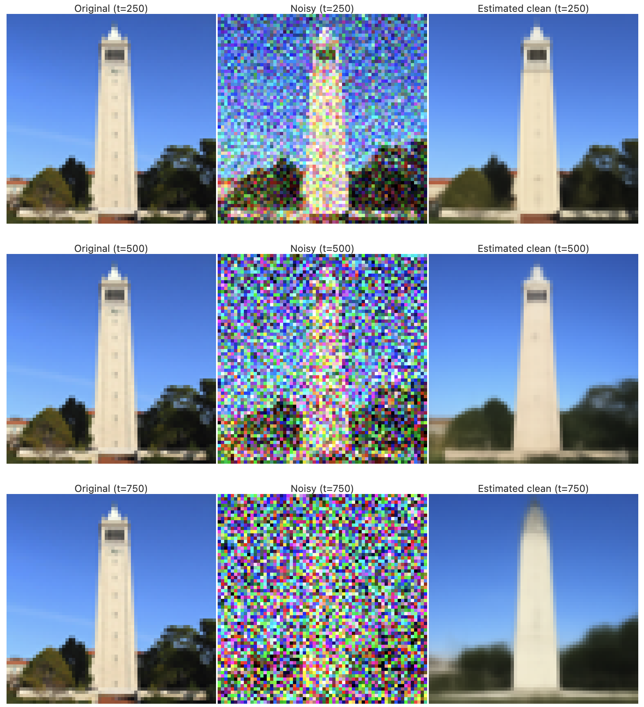
One-step denoising works well for lightly corrupted images, but it struggles when the noise level is high. Diffusion models, however, are designed to clean an image gradually through many small steps. Instead of jumping directly from a very noisy image to a clean one, the model repeatedly estimates what the image should look like and slowly moves it toward a clearer version. To make this process faster, only a subset of timesteps is used, starting from a very noisy point and stepping down toward zero noise in regular intervals. At each step, the model predicts both the underlying image content and the amount of randomness that should remain, and these predictions are combined to produce a slightly cleaner result. Repeating this many times produces a smooth transition from pure noise back to a detailed image. Below are the intermediate stages of this iterative denoising process applied to the Campanile, along with a comparison to the single-step method and to simple Gaussian blurring. Interestingly the model does not fully recover the campanile, but a tower that looks similar, however more round than in a rectangular shape.
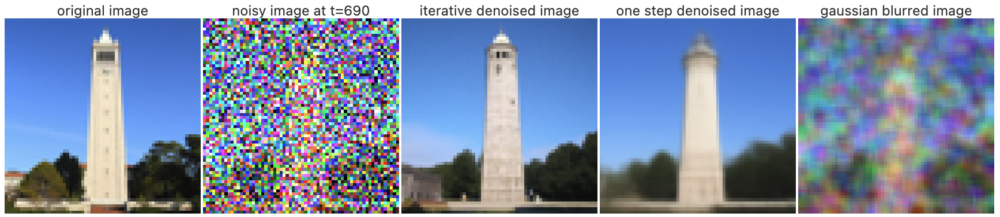
In the previous part (1.4) we used the diffusion model to denoise an image. Another application for the iterative_denoise function is to generate images from scratch. Five results of the prompt "a high quality photo" are shown below.
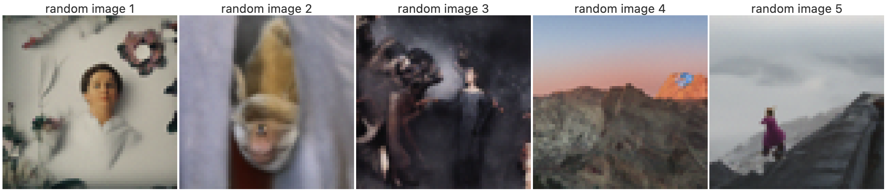
To improve image quality, classifier-free guidance (CFG) is used. The idea behind CFG is to guide the diffusion model more strongly toward the text prompt while still keeping the flexibility of the generation process. This is done by combining two predictions: one where the model follows the prompt, and one where it ignores the prompt entirely. By emphasizing the difference between these two predictions, the model is encouraged to produce images that better match the intended description. While this reduces diversity slightly, it leads to much clearer and more realistic images. The results shown below demonstrate how CFG significantly improves image quality compared to unguided sampling.
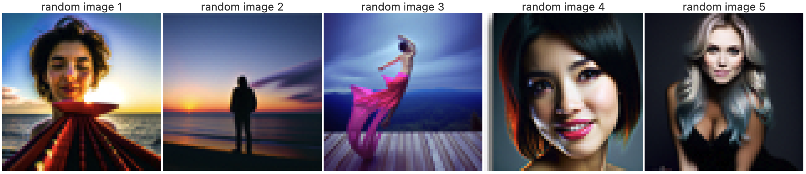
This section shows how diffusion models can be used to edit existing images instead of generating new ones from scratch. The process starts by adding a small amount of noise to a real image and then denoising it again using the diffusion model. During denoising, the model fills in missing details and slightly reshapes the image, which allows controlled edits to appear. Adding more noise leads to stronger changes, while less noise keeps the result closer to the original image. This approach follows the idea of SDEdit, where images are gently pushed onto the natural image manifold. The results below show multiple edited versions of the Campanile and other test images, with increasing similarity to the original as the noise level is reduced.
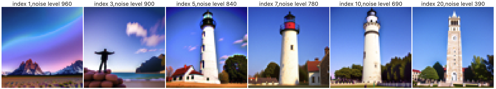
Next we apply the same image-to-image editing approach to less realistic inputs, such as sketches, drawings, and images found online. Starting from rough or abstract visuals works especially well, because the diffusion model naturally fills in missing details and pushes the image toward a more realistic appearance. By adding different amounts of noise and then denoising, the model produces a range of results from loose interpretations to images that closely resemble natural photographs. Below, examples are shown for both web images and hand-drawn inputs, illustrating how simple sketches and downloaded images can be transformed into more refined and realistic versions using the same diffusion-based process.
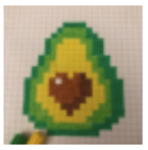
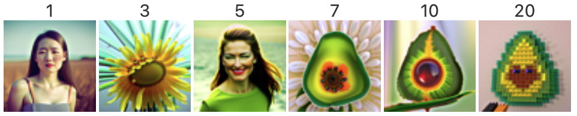
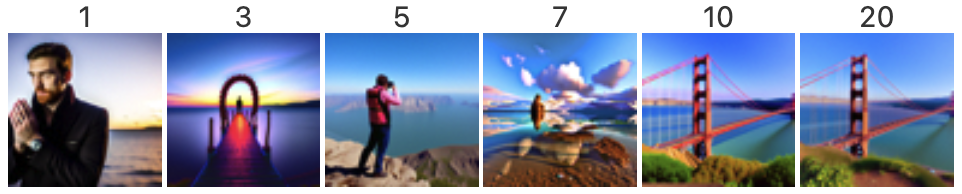
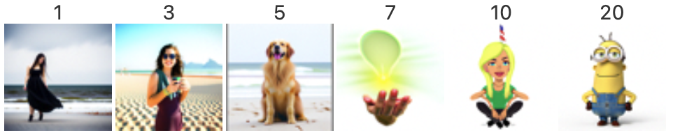
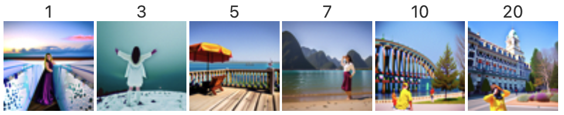
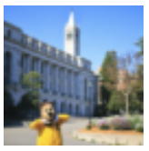
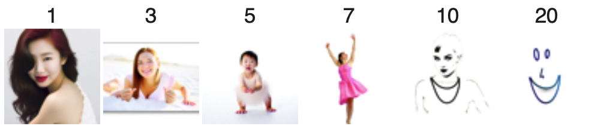
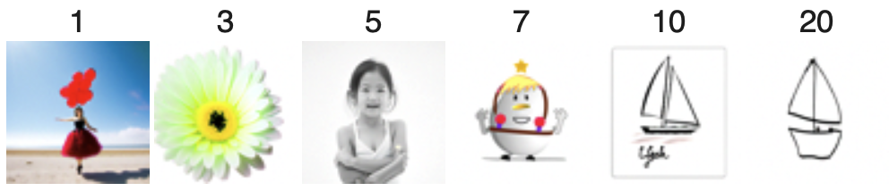
Inpainting is a way to “fill in” missing parts of an image in a realistic-looking way. A mask is used to mark the region that should be replaced, while the rest of the image should stay the same. The diffusion denoising loop is then run as usual, but after every step the pixels outside the mask are reset to match the original image (with the correct amount of noise for that step). This keeps the unchanged area stable, while the model is free to generate new content only inside the masked region. The results below show the Campanile with the top region inpainted, along with additional examples using custom masks on other images.
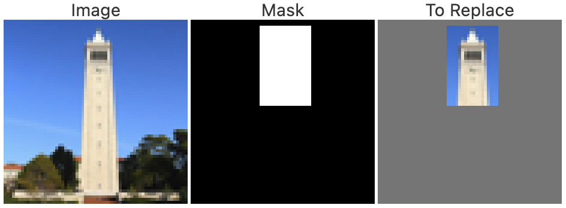
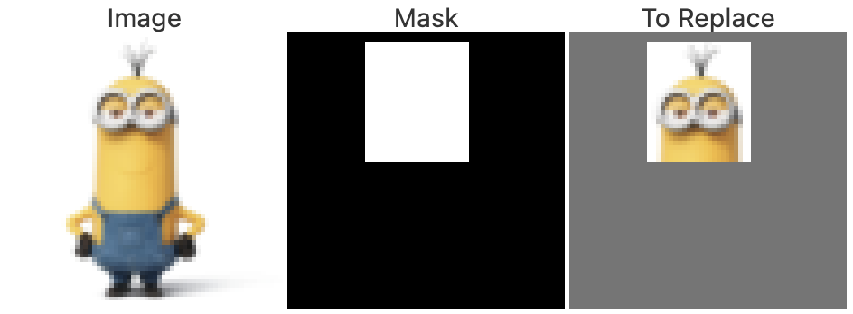
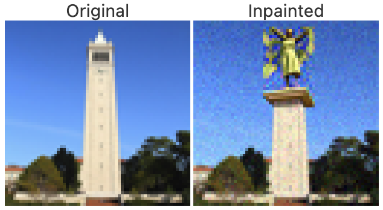
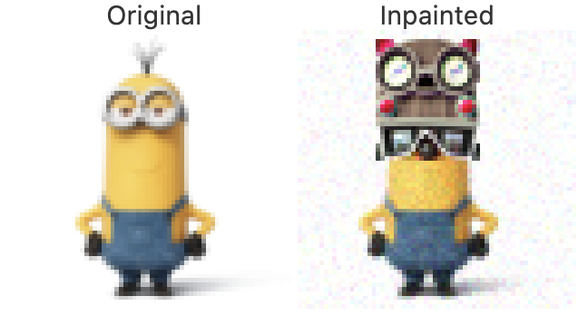
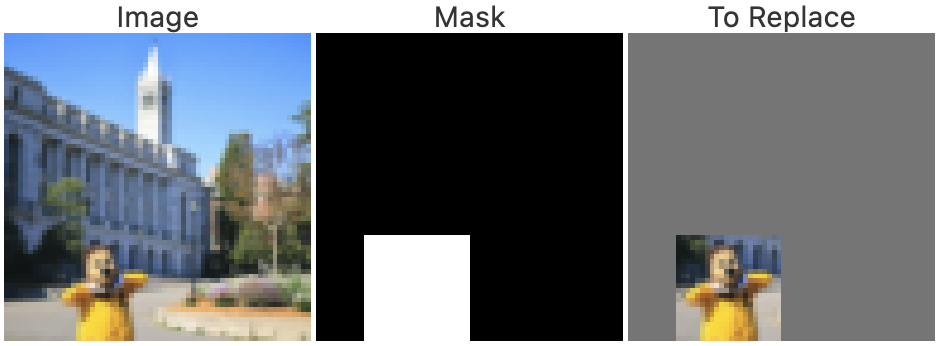
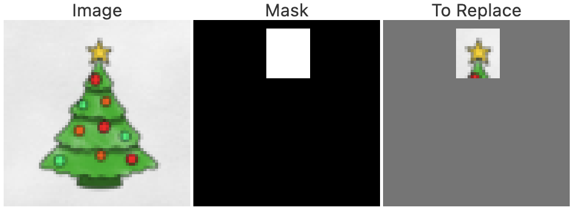
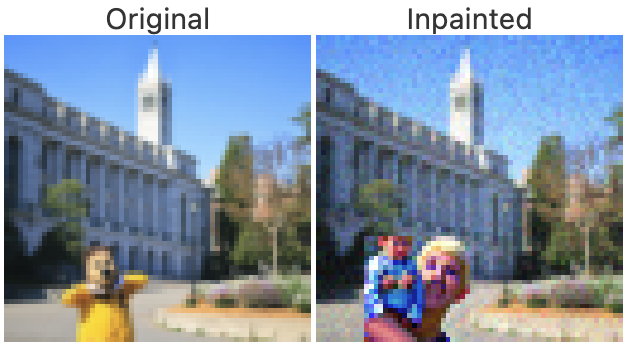
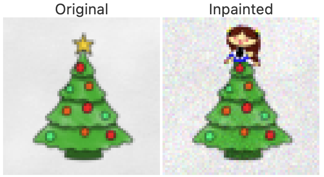
Next we add text control to the image-to-image editing process. Instead of only pushing a noisy image back toward a realistic-looking version, the diffusion model is also guided by a text prompt that describes the desired result. This makes it possible to keep the main structure of the original image while steering the style or content in a specific direction. Different noise levels again control how strong the change is: low noise keeps the result close to the original, while higher noise gives the model more freedom to follow the prompt. The images shown below demonstrate these text-guided edits for the Campanile and additional test images.
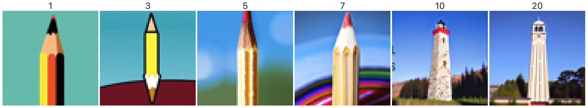
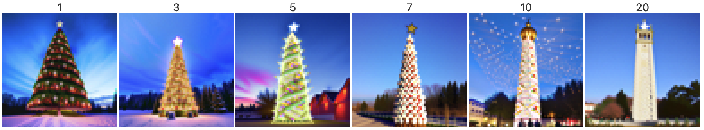
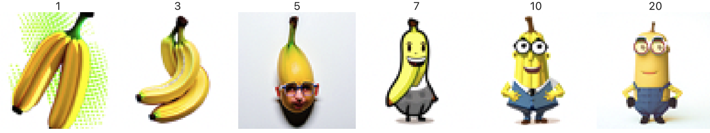
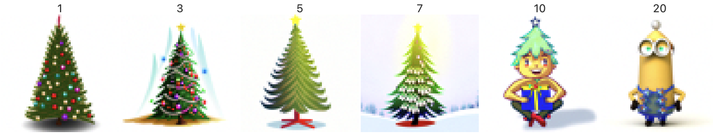
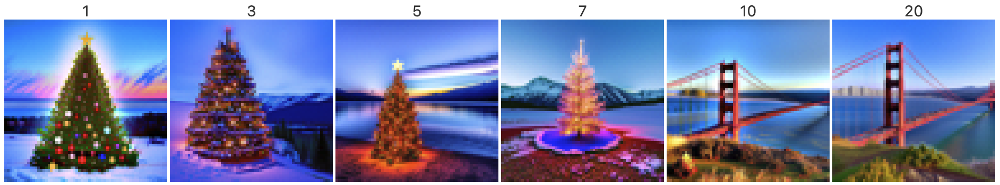
Visual anagrams use diffusion models to create optical illusions that change depending on how the image is viewed. The idea is to guide the denoising process with two different text prompts at the same time—one for the image as it appears normally, and one for the image when it is flipped upside down. By combining these two guidance signals, the model produces a single image that can be interpreted in two different ways. When viewed upright, the image matches one description, and when flipped, it reveals a completely different scene. The examples shown below demonstrate how diffusion models can blend multiple interpretations into a visual illusion.
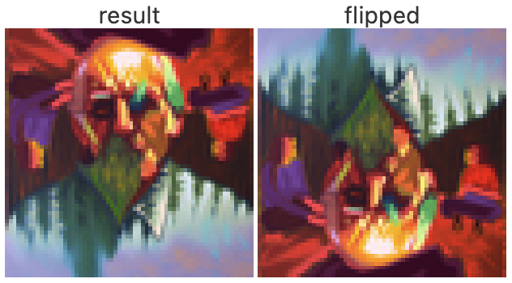
"an oil painting of people
around a campfire"
"an oil painting of an old man"
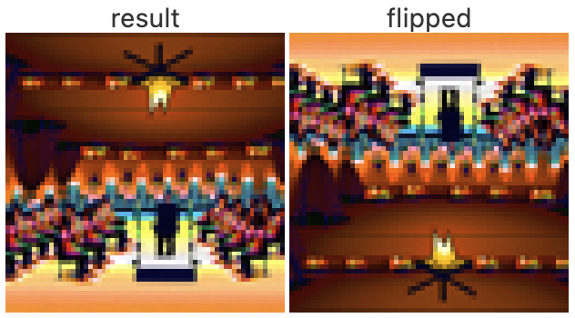
"an oil painting of people
around a campfire"
"an orchestra in a concert hall"
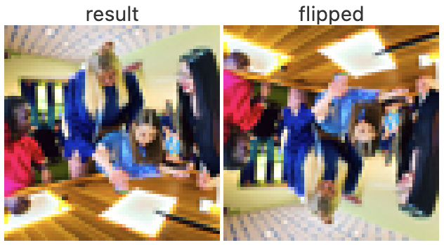
"students learning"
"people dancing"
Hybrid images combine two different visual interpretations into a single picture using diffusion models. The key idea is to separate image information by scale: one prompt controls the large, smooth structures of the image, while another prompt influences the fine details and textures. During denoising, these two influences are merged so that one image is visible from far away and the other appears when looking more closely. This extends the classic hybrid image idea from earlier projects into the diffusion setting. The examples below show how diffusion models can blend different concepts across frequencies to create images that change their appearance depending on how they are viewed.
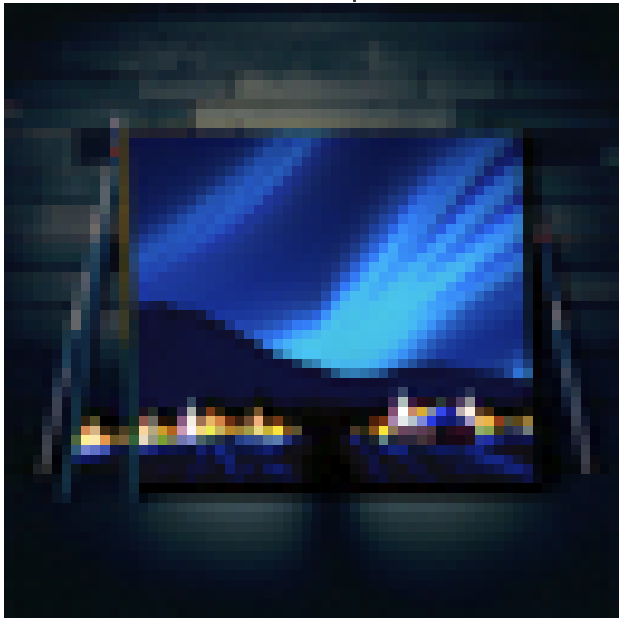
"an oil painting of a snowy mountain village"
"a computer"
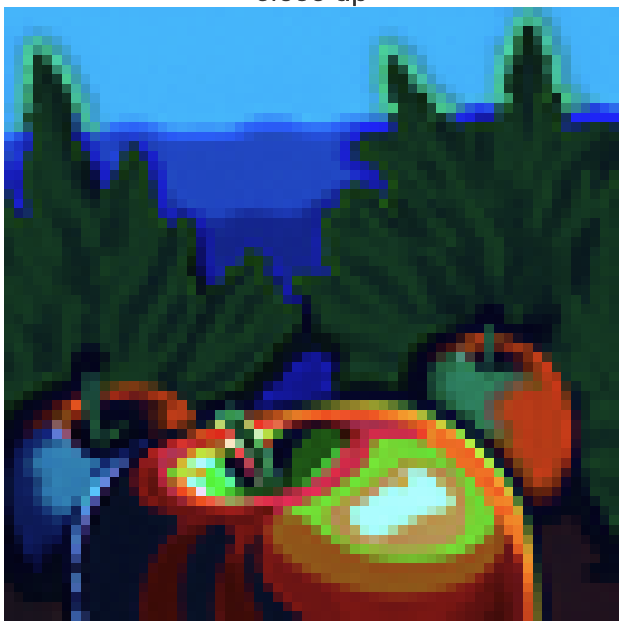
"an oil painting of people around a campfire"
"a red apple"
"a red apple"
"an oil painting of people around a campfire"
Part B explores how diffusion-based generative models can be built and trained from scratch. Instead of relying on large pre-trained models, this part focuses on implementing the core components of a diffusion pipeline, including the neural network architecture, the noise process, and the sampling procedure. The goal is to understand how a model can learn to gradually remove noise and generate meaningful images on its own. By training and evaluating these models on simpler datasets, Part B provides insight into how diffusion models work internally and how design choices affect the quality and behavior of generated results.
In this section the forward diffusion process was implemented, which defines how clean images are gradually corrupted with noise. By repeatedly adding small amounts of randomness, images are transformed step by step into nearly pure noise. This process creates the training signal for diffusion models, since the goal is to learn to reverse it.
The goal is to train a UNet to predict the clean image. Therefore a UNet with downsampling and upsampling blocks, trained on MNIST was implemented.
The visualization below shows how different noise levels affect the digits. As sigma increases from 0.0 to 1.0, the digits progressively become more noisy:
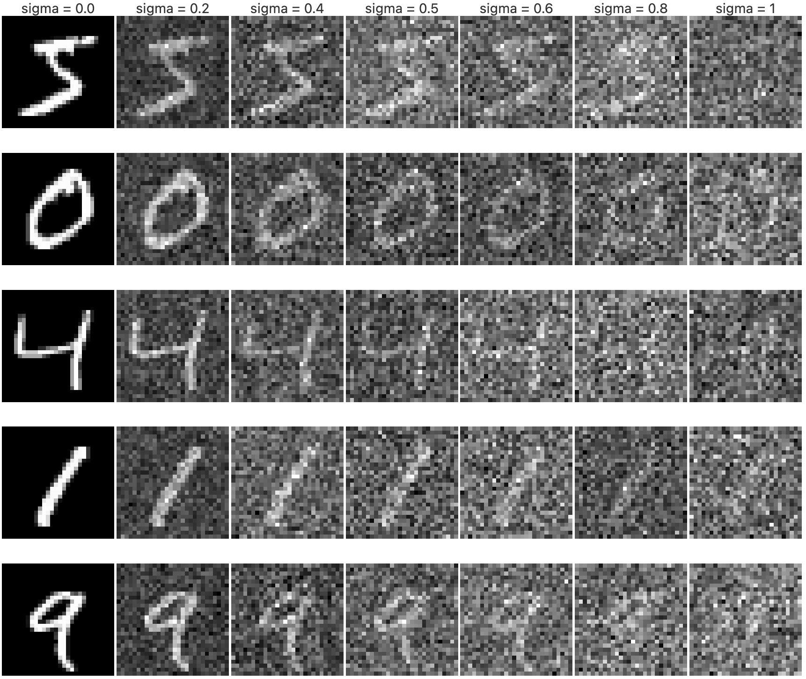
The model was trained using the following parameters:
- batch_size = 256
- learning_rate = 1e-4
- noise_level = 0.5
- hidden_dim = 128
- num_epochs = 5
The figure below shows how the model converges over 5 epochs. The plots on the right show the denoised images after training for 5 epochs.
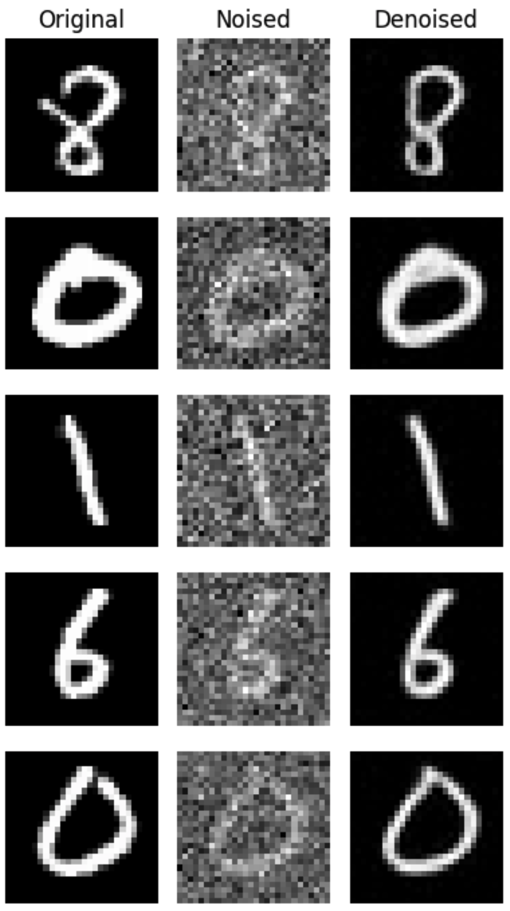
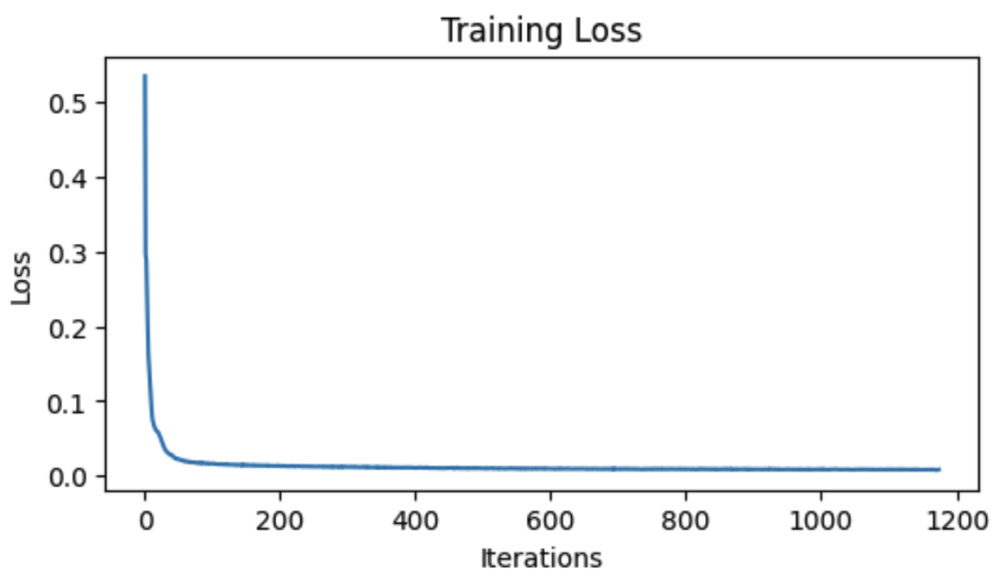
Even for different noise level than the model was trained on it yields good results. However, the best result is achieved for the trained sigma of 0.5.
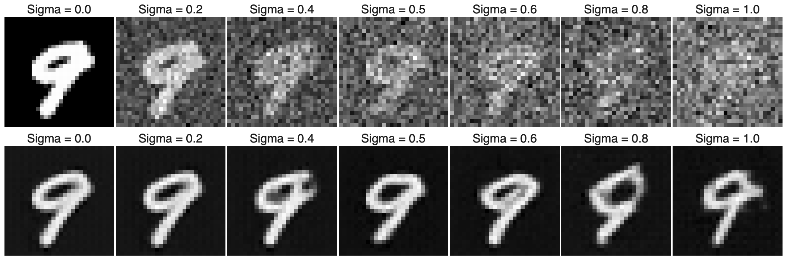
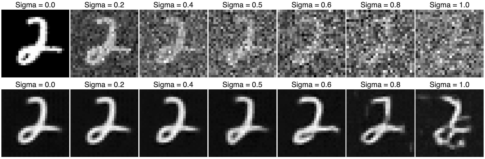
When denoising pure noise, the model produces images that look blurry and resemble a mix of several digits or something similar to an 8 rather than a clear number from 0 to 9. Instead of generating a specific digit, the outputs appear like averaged shapes or overlapping patterns from the training set. This happens because the model is trained using an MSE loss. With this loss, the model learns to output whatever minimizes the average squared error across all training images. When the input is pure noise, there is no information that tells the model which digit to create. In this situation, the safest choice for the model is to predict something close to the average of all digits in the dataset. This leads to fuzzy, ambiguous images that combine features of multiple digits. In this experiment, pure Gaussian noise with a signal strength of 1 was used as the input. Even though the generated images are not sharp, the training loss decreases smoothly and looks reasonable, which indicates that the model is learning as expected. The blurry results are therefore not a training failure, but a natural outcome of using pure noise inputs with an MSE criterion.
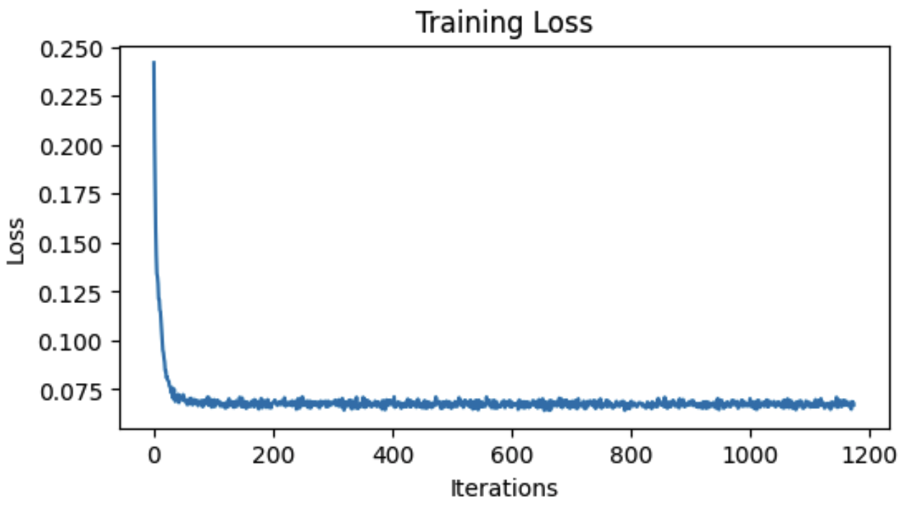
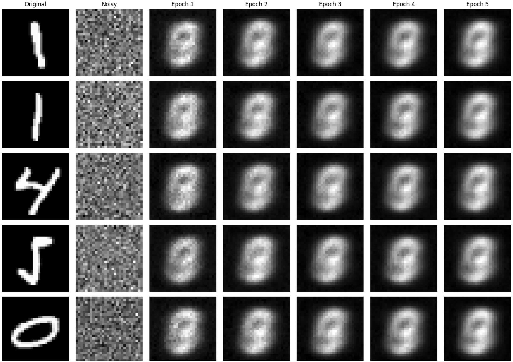
In Part 2 of this project, we train a generative model using the flow matching approach on the MNIST handwritten digits dataset. The goal is to learn how to transform random noise into realistic digit images through a sequence of small steps, rather than generating images in a single pass. We first implement and train atime-conditionedUNet, which takes a noisy image and a time value as input and predicts how the image should change at that step. After training, the model can generate new samples by starting from noise and repeatedly applying these predicted updates. We then extend this model to a class-conditional UNet, allowing us to control which digit is generated. To improve sample quality, we use classifier free guidance, which balances unconditional and class-conditioned generation during sampling.
A training loss curve plot for the time-conditioned UNet over the whole training process is shown below.
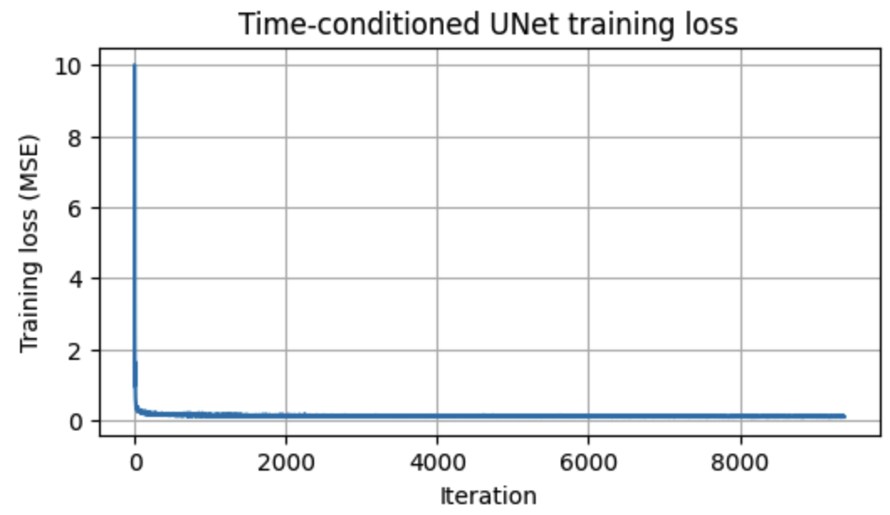
Sampling results from the time-conditioned UNet for 1, 5, and 10 epochs. As expected the results are not perfect, but reasonably good.
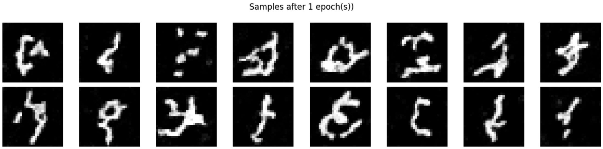
To gain control over which digit the model generates, we extend the flow-matching UNet to be class-conditioned. During training, the model receives both the noisy image and the corresponding digit label, allowing it to learn class-specific generation patterns. We use classifier-free guidance, where the model is occasionally trained without class information so that, during sampling, conditional and unconditional predictions can be combined to improve sample quality and controllability. Below, we show the training loss for the class-conditional model and example samples generated for each digit class at different training stages.
Epoch 1
Epoch 5
Epoch 10
Can we get rid of the annoying learning rate scheduler?
In the implementation, the exponential learning-rate decay is not essential for training the model successfully. The task only requires training a time- and class-conditioned UNet to convergence, and this can be achieved using a fixed learning rate with Adam. In practice, we found that using a constant learning rate (e.g. 1\mathrm{e}{-2}) already leads to stable training and steadily decreasing loss for this relatively small model and dataset (MNIST). The scheduler mainly serves as an optional stabilization or fine-tuning mechanism, but its absence does not change the training objective, the algorithms, or the qualitative sampling results.